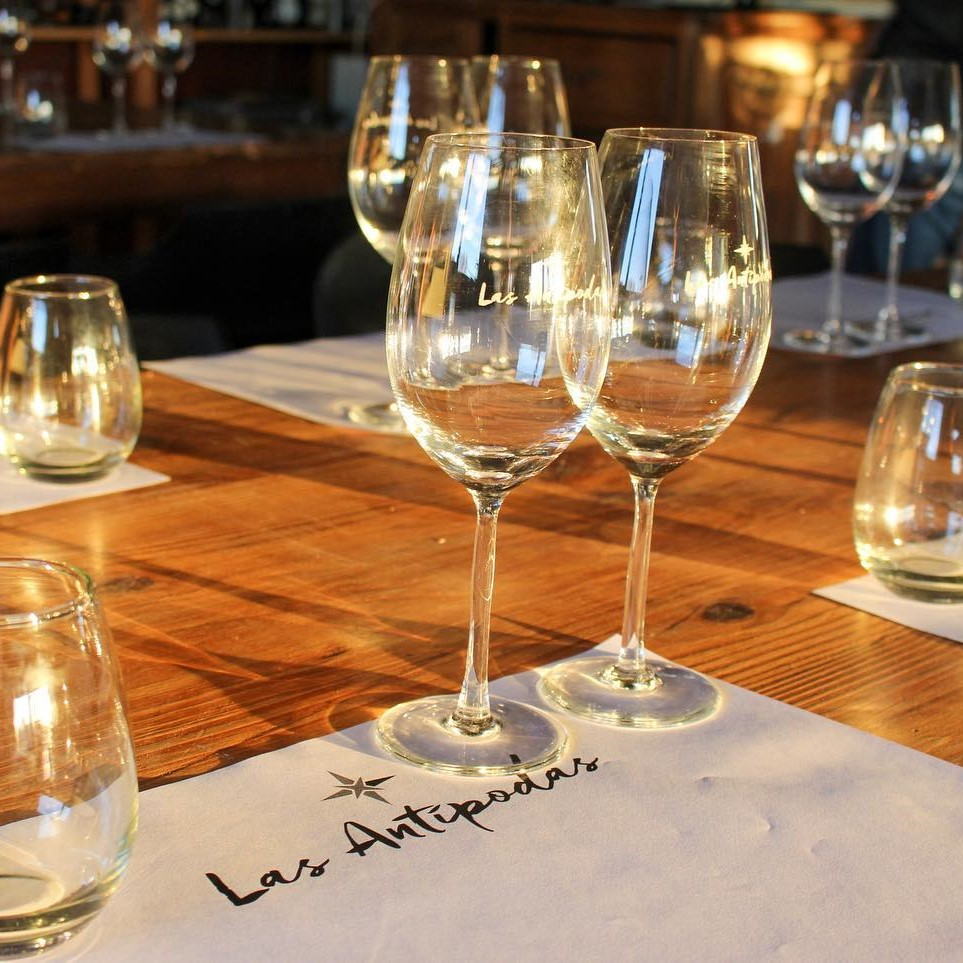
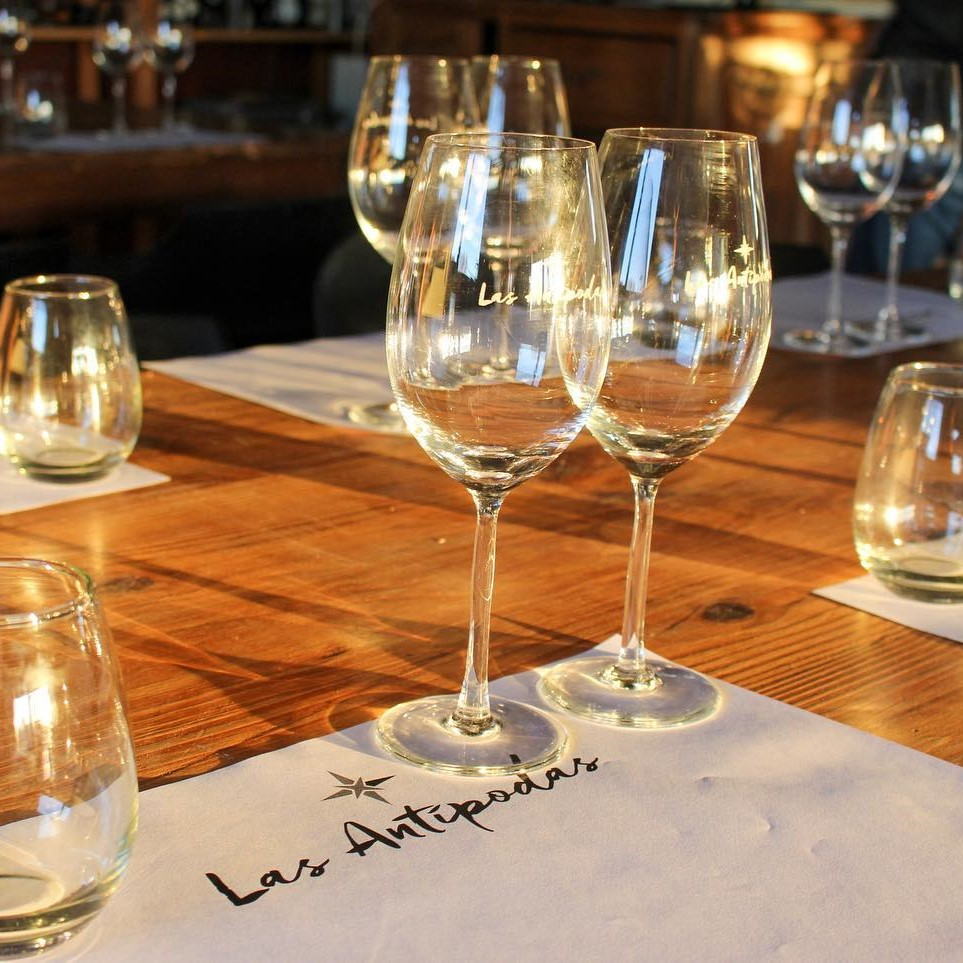
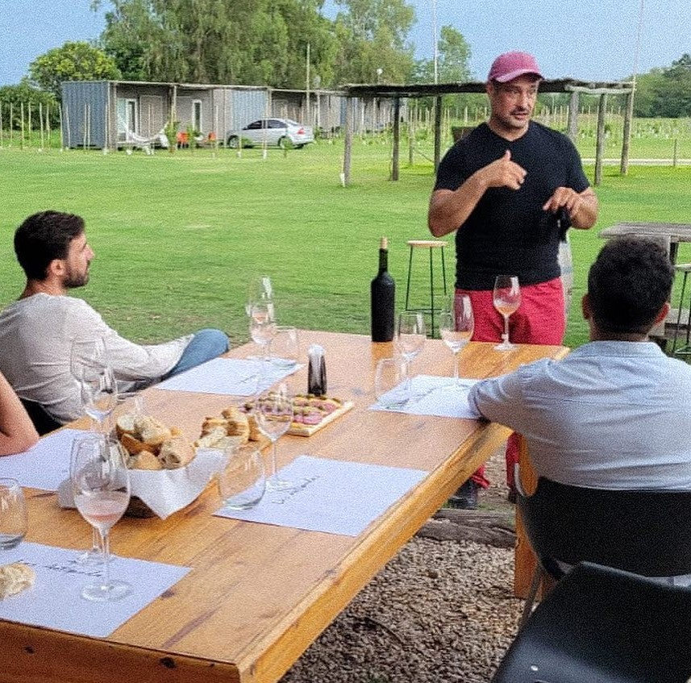
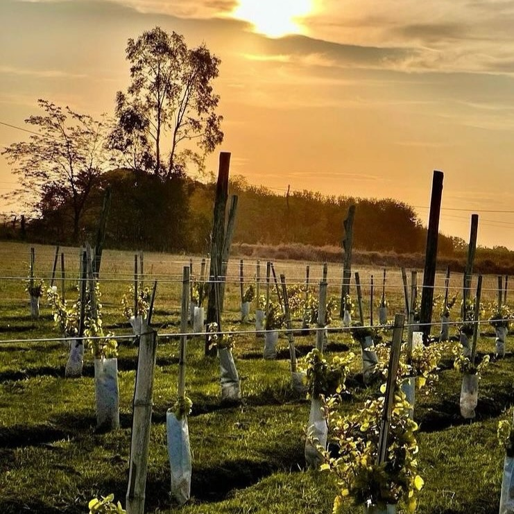
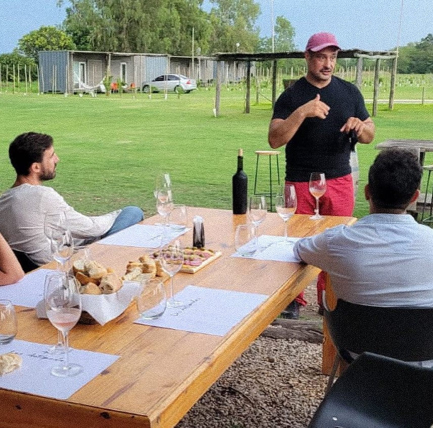
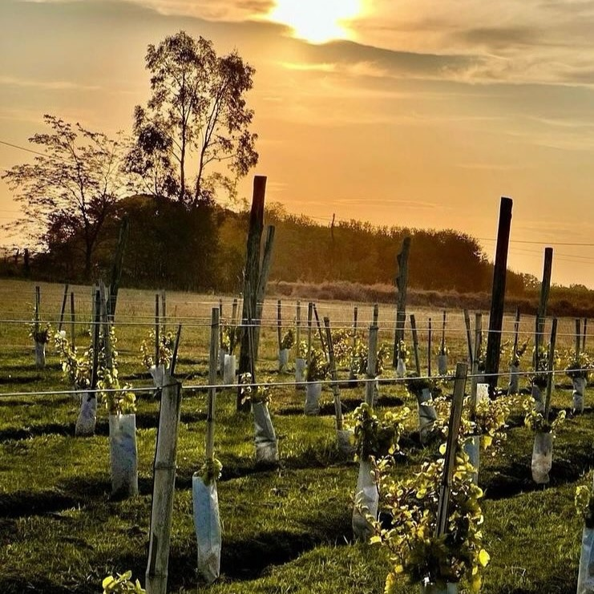

 




Entre copas y viñas
Una experiencia enogastronómica que combina paisaje, sabores y conocimiento en un recorrido por la finca. La propuesta incluye una degustación guiada de cuatro vinos diferentes, seleccionados para ofrecer una visión amplia y contrastada de las distintas expresiones del viñedo. Cada vino aporta una dimensión única, construyendo una experiencia sensorial completa.
La cata se acompaña con una picada regional, elaborada con productos locales que complementan y realzan el carácter de cada copa. El recorrido concluye con una caminata entre las viñas, donde se comparten detalles sobre el trabajo en la finca y el entorno que da origen a los vinos.
La actividad se realiza únicamente con reserva anticipada, sujeta a condiciones climáticas. Cupos limitados.
Consultar Disponibilidad / Reservar